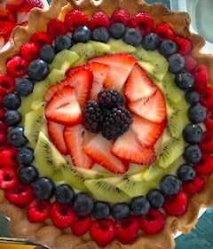
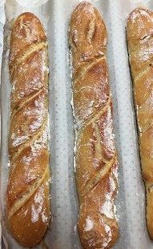

- Prepare puff pastry dough
Mix 8 oz butter, 3 oz sugar, and 1/4 tsp of salt at low speed with a paddle attachment until smooth and evenly blended.Add 2.25 oz eggs and mix until just absorbed.Sift 12 oz pastry flour and add it to mixture until evenly blended.Chill several hours before using.
- Prepare pastry cream
In a heavy saucepan, dissolve 4 oz sugar in 1 qt of milk and bring just to a boil.With a whip, beat 3 oz egg yolks and 4 oz whole eggs. Sift 2.5 oz cornstarch and 4 oz sugar into the eggs. Beat with whip until perfectly smooth.Temper egg mixture by slowly beating in hot milk in a thin stream. Return mixture to heat and bring to a boil, stirring constantly.When mixture comes to a boil, continue to stir constantly and boil for up to 2 minutes, until cream has no raw, starchy taste. Remove from heat. Stir in 2 oz butter and 0.5 oz vanilla extract. Mix until the butter is melted and completely blended in. Pour out into a clean, rectangular shallow pan. Cover with plastic film placed directly in contact with the cream surface to prevent a crust from forming.
- Roll out puff pastry dough 1/8 in thick. Make border for tart with remaining dough, and prick inside dough shell with a fork to prevent blistering.
- Rest dough in the refrigerator for 30 mins before baking. Bake at 400F until browned and crisp. Cool.
- Fill shell with pastry cream, arrange sliced assortment of fruit on top, brush with glaze if desired.

- Lightly oil a square plastic container. Put 500g bread flour, 10g salt, and 10g instant yeast into a mixer bowl with a dough hook. Add 270ml cool water and begin mixing on slow speed.As dough begins to come together, slowly add remaining 100ml water, then continue to mix on medium speed for 5-7 mins until you have a glossy, elastic dough.
- Tip dough into prepared tub. Cover with a tea towel and leave until doubled in size - about 1 hour. Line 2 baking trays with parchment or silicone paper.
- Coat work surface with little olive oil, then carefully tip dough onto it. Handle dough gently to keep as much air possible, the dough will be wet but still lively. Divide into 4-5 pieces. Shape each piece into an oblong by flattening the dough out slightly and folding the sides into the middle. Then roll each up into a sausage and roll backwards and forwards gently pressing down til desired length.
- Place baguettes on baking tray and place tray inside a clean plastic bag and leave to prove for about 1hr, until dough has doubled in size and springs back quickly if you prod lightly with finger. Meanwhile, heat oven to 428F and put a roasting tray on the bottom to heat up.
- When baguettes are risen, dust them lightly with flour. Then slash each one 3 times along its length on the diagonal, using a razor blade or sharp knife. Fill roasting tray with hot water to create steam and put bread into the oven. Bake for 25 mins or until baguettes are golden brown and have a slight sheen. Cool on a wire rack. *Tip: When checking the doneness in bread you can flip it over and flick against the bottom. You should hear a hollow sound which means it's fully cooked.